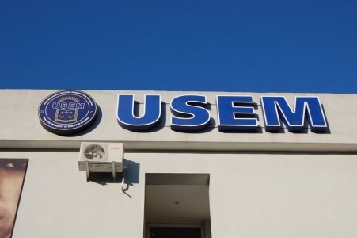
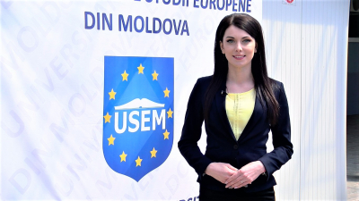
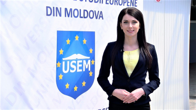

| Medicina | Drept | Tehnologii Informaționale | Ştiinţe economice |
|---|
| +373 22 509 122 +373 22 509 127 (linia fierbinte) info@usem.md |
Strada Ghenadie Iablocikin 2/1 Chișinău 2069 Republica Moldova |
|  |
Deţinătorul diplomei poate activa în cadrul diverselor domenii ale economiei, în entităţi economice în funcţie de contabil
Deţinătorul diplomei poate activa în cadrul: diverselor domenii ale economiei, precum activitatea bancară, de asigurari, burse de valori, control financiar, în întreprinderile cu orice formă de proprietate şi ale oricărei ramuri; etc.
Deţinătorul diplomei poate activa în cadrul agenţiilor de turism, a hotelurilor, a restaurantelor, etc. Viitorii specialişti în Turism vor avea pregătirea necesară pentru organizarea, planificarea şi dirijarea activităţii turistice şi a serviciilor hoteliere, vor fi capabili să cerceteze piaţa turistică, să implementeze sisteme informatice în activitatea întreprinderilor industriei ospitalităţii, să efectueze analiza economico-financiară a întreprinderii turistice, să posede limbi străine de uz internaţional, să fie un diplomat în activitatea sa în industria ospitalităţii.
Avantajele specialităţilor oferite de Facultatea de Științe Economice sunt influenţate de faptul că aceste specialităţi reprezintă pentru Republica Moldova unul dintre sectoarele prioritare şi care prin resursele sale pe care le antrenează şi prin interconexiunile cu celelalte ramuri ale economiei naţionale, constituie un factor important pentru progresul economic.
| SPECIALITATEA | ÎNVĂŢĂMÂNT CU FRECVENŢĂ LA ZI | ÎNVĂŢĂMÂNT CU FRECVENŢĂ REDUSA |
| Contabilitate | 7.000 | 4.000 |
| Finanțe și Bănci | 7.000 | 4.000 |
| Servicii hoteliere, Turism și Agrement | 7.000 | 4.000 |
| Business și Administrare | 7.000 | 4.000 |
 
